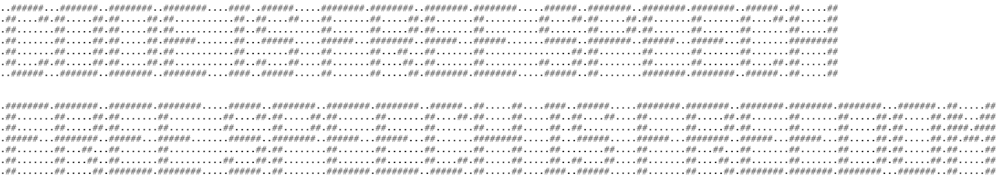
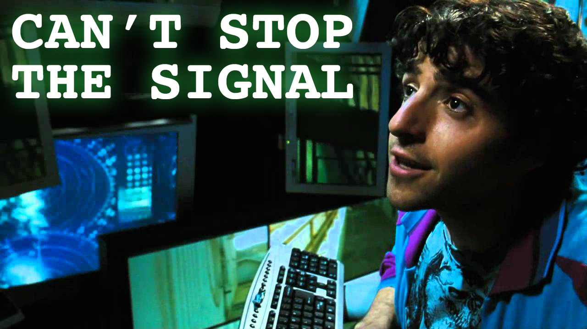

Read our statement about CodeIsFreeSpeech.com here.
FREE SPEECH FILES & CODE
ABOUT THIS PROJECT
CodeIsFreeSpeech.com is a publicly-available Web site for truthful, non-misleading, non-commercial speech and information that is protected under the United States Constitution. The purpose of this project is to allow people to share knowledge and empower them to exercise their fundamental, individual rights. CodeIsFreeSpeech.com is a project of Firearms Policy Coalition, Firearms Policy Foundation, The Calguns Foundation, California Association of Federal Firearms Licensees, and a number of individuals who are passionate about the Constitution and individual liberties. We wish to thank Cody Wilson and Defense Distributed for their courage, passion, innovation, and inspiration. You can send us a message here.
SUPPORT YOUR RIGHTS AND THE PEOPLE FIGHTING FOR THEM
KNOW YOUR RIGHTS
United States Constitution, Amendment I
Congress shall make no law respecting an establishment of religion, or prohibiting the free exercise thereof; or abridging the freedom of speech, or of the press; or the right of the people peaceably to assemble, and to petition the government for a redress of grievances.
United States Constitution, Amendment II
A well regulated militia, being necessary to the security of a free state, the right of the people to keep and bear arms, shall not be infringed.
United States Constitution, Amendment IV
The right of the people to be secure in their persons, houses, papers, and effects, against unreasonable searches and seizures, shall not be violated, and no warrants shall issue, but upon probable cause, supported by oath or affirmation, and particularly describing the place to be searched, and the persons or things to be seized.
United States Constitution, Amendment V
No person shall be held to answer for a capital, or otherwise infamous crime, unless on a presentment or indictment of a grand jury, except in cases arising in the land or naval forces, or in the militia, when in actual service in time of war or public danger; nor shall any person be subject for the same offense to be twice put in jeopardy of life or limb; nor shall be compelled in any criminal case to be a witness against himself, nor be deprived of life, liberty, or property, without due process of law; nor shall private property be taken for public use, without just compensation.
United States Constitution, Amendment XIV
Section 1.
All persons born or naturalized in the United States, and subject to the jurisdiction thereof, are citizens of the United States and of the state wherein they reside. No state shall make or enforce any law which shall abridge the privileges or immunities of citizens of the United States; nor shall any state deprive any person of life, liberty, or property, without due process of law; nor deny to any person within its jurisdiction the equal protection of the laws.
Section 5.
The Congress shall have power to enforce, by appropriate legislation, the provisions of this article.


©2018 CodeIsFreeSpeech.com. All Rights Reserved.